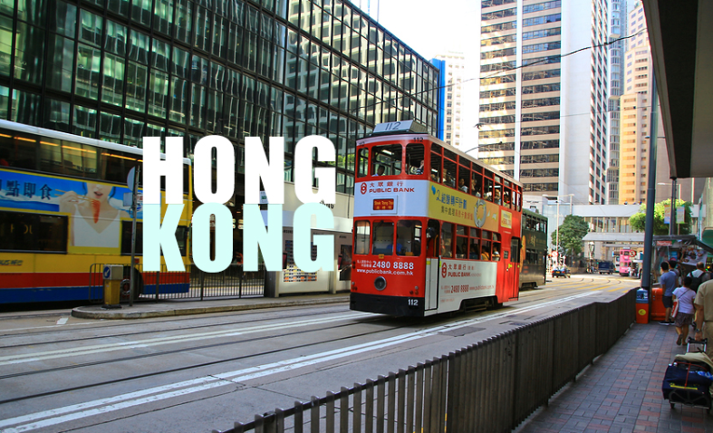
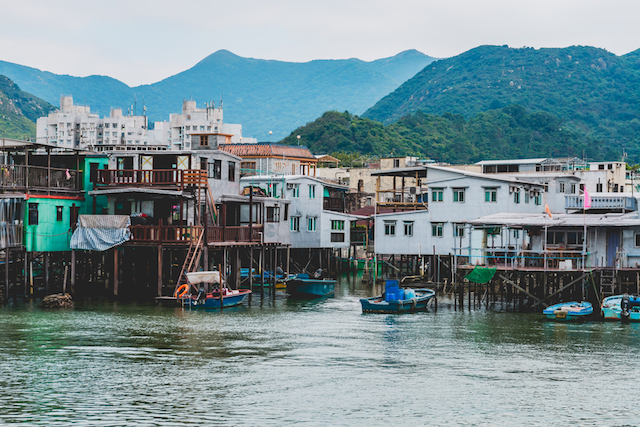
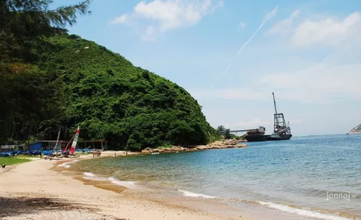
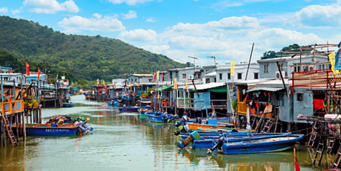

▶ 추천 장소
|  | 가깝고, 저렴한 항공권도 많아 ‘어딘가 훌쩍 떠나고 싶다’라는 생각이 들 때 주말여행으로 다녀오기에 손색이 없는 곳이다. 화려한 마천루, 환상적인 야경, 개성 넘치는 쇼핑 거리 덕분에 혼자 있어도 외롭거나 지루할 틈이 없다. 갤러리, 고급 레스토랑, 브랜드숍, 디자인숍이 골목골목 늘어서 있는 개성 넘치는 소호 거리를 천천히 걸어보는 것도 홍콩 여행의 즐거움 중 하나이다. |
|  | 세계의 아름다운 야경 순위에서 늘 상위권을 차지하는 빅토리아 파크 야경과 침사추이에서 매일 저녁 8시부터 펼쳐지는 화려한 레이저쇼 ‘심포니 오브 라이트’는 꼭 보기를 추천한다. 홍콩에는 화려한 도시 이미지 외에 색다른 매력을 느낄 수 있는 곳도 많다. |
|  | 섹오 비치는 바위가 많은 만을 끼고 있는 해변인데, 근처에는 알록달록한 건물이 즐비한 섹오 빌리지가 있다. 카메라만 대면 다 작품이 되는 곳이다. |
|  | 란타우섬에 있는 평화로운 어촌 마을인 타이오 마을에서는 빼곡히 늘어선 독특한 수상가옥을 보고 신선한 해산물 요리도 즐길 수 있다. 이곳에서는 보트를 타고 돌면서 핑크 돌고래를 찾는 투어도 할 수 있다. *팁: 탁 트인 홍콩 시내 풍경을 한눈에 보고 싶다면, 홍콩섬에서 가장 높은 산이 빅토리아 파크에 가 보세요. 빅토리아 피크 정상에 있는 빅토리아 피크 가든에서는 간단한 간식을 먹으면서 피크닉도 즐길 수 있답니다. |